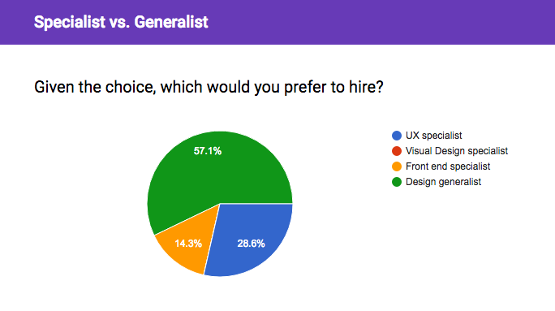

Hard work beats talent when talent doesn’t work hard
— Tim Notke
high school basketball coach
How to design designers
Chris Courtney
Director / Design Program / Bloc.io
@designhawg
designhawg.github.io/designers
CHRIS



mentorship > classroom
one-to-one beats one-to-many
problem
how to consistently produce great outcomes with so many unique inputs
problem
how do we design job-readydesigners???
process
experience
expectations
focus
part 1
process
Process understanding is the most important thing I look for in a entry-level designer
— NBC Sports
define: process
how do all the parts fit together?
JUSTIN
While he had no professional experience, his process understanding and thoughtfulness stood out
justin: update
landed first job in 2015, was recruited by his manager to follow him to a new company in 2016
justin remains active
in the bloc design community
part 2
experience
The ability to defend their work, incorporate feedback, and understand the client’s overall goals.
— IDEO
MEREDITH
meredith: update
landed first job in 2016, startup folded 8 months later.
was out of work for one week before being hired at halliburton.
meredith remains active
in the bloc design community
part 3
expectations
problem
how society defines graduation
challenge
find job +
continue to grow
the best students never focus on graduation
the best students focus on growth
SAM
tinker
computers
law
design
research
we are always at the beginning of our journey
teachers, mentors...are the model
sam: update
landed with mozilla and splits her time between the New York Times and Washington Post
sam remains active
in the bloc design community
part 4
focus
part 4
desired amount
of focus
Strong point of view, willingness to participate in and incorporate research into their work, demonstrated collaboration...
...willingness to challenge received information, ability to ask questions, ability to present work, systems thinker...
...Not identifying their skills with a particular tool.
— Mule Design
job-ready designers
generalist > specialist

Research +
Visual +
Code
Problem Solver
JUSTIN
MEREDITH
SAM
forever curious
questions?
@designhawg
taco about it later?
@designhawg
I love tacos!
@designhawg